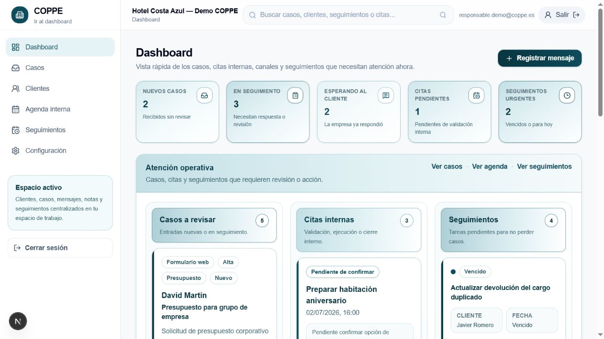
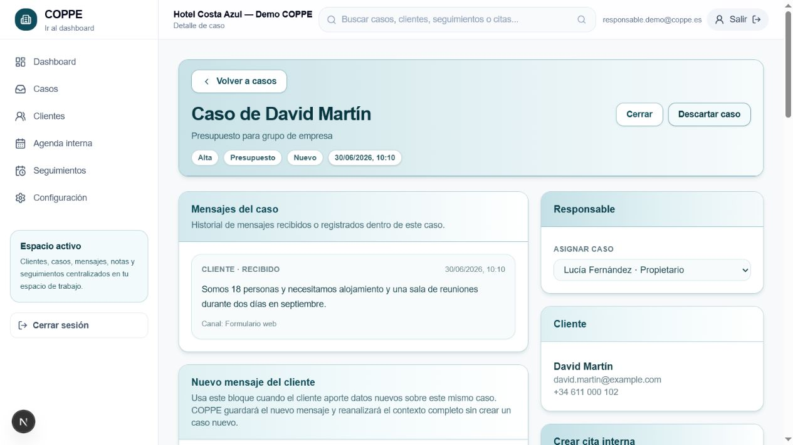

Lo que hoy cuesta tiempo
- Revisar varias bandejas y reconstruir el contexto.
- Decidir manualmente qué es urgente y quién debe actuar.
- Recordar citas, seguimientos y respuestas pendientes.
- Separar clientes reales de ruido comercial y spam.
Una plataforma operativa para centralizar conversaciones, responder con contexto y convertir cada petición en una acción trazable.
COPPE transforma mensajes dispersos en casos con responsable, prioridad, contexto, agenda y próximos pasos. El equipo mantiene el control; la plataforma elimina fricción y pérdida de información.

Qué necesita atención, quién lo tiene y qué vence primero.
El contexto permanece unido al cliente aunque cambie el canal.
Estados, autores y fechas permiten analizar el proceso real.

El primer mensaje de una conversación puede recibir una confirmación general y educada, sin duplicados.
Las entradas nuevas generan notificación, contador de pendientes y opción de aviso de escritorio.
Heurísticas, límites y reglas de remitente separan spam o publicidad en una cuarentena revisable.
Las respuestas asistidas son editables. El equipo decide qué se envía y conserva la responsabilidad de la comunicación.
COPPE combina una vista diaria clara con validación atómica en base de datos. Dos solicitudes simultáneas no pueden reservar el mismo recurso en un intervalo incompatible.
Comprueba fecha, hora, duración y responsable antes de guardar.
Permite reservar minutos antes y después de cada cita.
Recursos diferentes pueden atender a la misma hora sin conflicto.
| Regla | Comportamiento | Resultado |
|---|---|---|
| Mismo responsable | Los intervalos se solapan, incluidos los márgenes. | Reserva bloqueada |
| Hora adyacente | La nueva cita comienza al terminar el tiempo protegido. | Reserva permitida |
| Responsable distinto | Cada recurso tiene disponibilidad independiente. | Reserva permitida |
| Sin responsable | La cita ocupa la disponibilidad general de la empresa. | Protección global |
Selector de fecha, franja semanal, listado cronológico, ubicación, zona horaria, duración, responsable y acceso directo al caso.
Empresa asociada a cada registro, políticas RLS y comprobaciones explícitas.
Roles, invitaciones controladas y MFA TOTP disponible.
Autoría operativa y registro de acciones sensibles.
Exportación versionada de datos por empresa.
Firmas, límites, idempotencia y conciliación de entregas.
Despliegue reproducible, comprobación de salud y secretos fuera del código.
| Área | Condición comercial |
|---|---|
| Relación jurídica | Contrato SaaS, encargo de tratamiento y responsabilidades documentadas. |
| Infraestructura | Planes profesionales, copias, monitorización y restauración probada. |
| Canales | Dominio, cuentas, webhooks, permisos y plantillas validados. |
| Privacidad | Retención, subencargados, derechos e incidentes definidos. |
Professional · 399 € + IVA/mes
Hasta 10 usuarios y 1.000 casos nuevos al mes, sujeto al contrato, soporte y límites definitivos.
El piloto se imputa al onboarding si convierte en contrato anual.
Propuesta no vinculante. El inicio queda sujeto a entidad proveedora, contrato, DPA, infraestructura comercial y validación de canales.
Una sesión de descubrimiento de 45 minutos permite cerrar alcance, volumen, canales, responsables y criterios de éxito.
Proceso actual, fricciones, canales, equipo y volumen.
Alcance, precio, calendario y métricas del piloto.
Entidad proveedora, contrato SaaS, DPA y soporte.
Configuración, usuarios, canales, formación y pruebas.
Treinta días de uso, seguimiento e informe final.
Atención al cliente convertida en trabajo organizado.
app.coppe.es